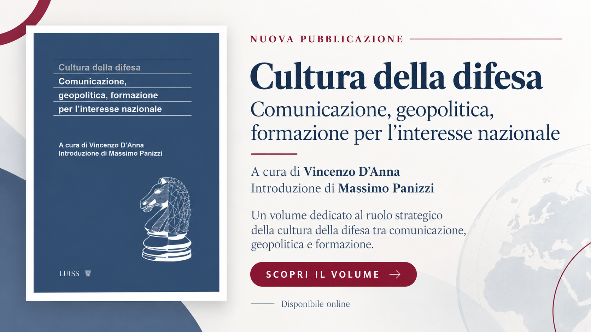

Analisi, policy brief, position paper, studi e report della Fondazione Boscacci ETS.

VOLUME · MAGGIO 2026Comunicazione, geopolitica e formazione per l’interesse nazionale. Un volume dedicato al ruolo strategico della cultura della difesa, a cura di Vincenzo D’Anna, con introduzione di Massimo Panizzi.
SCOPRI IL VOLUME →Produzione clandestina di tabacco, criminalità organizzata e sicurezza economica in Italia.
SCARICA PDF →Industria farmaceutica, sicurezza sanitaria e autonomia europea.
SCARICA PDF →Documenti sintetici di analisi e indirizzo dedicati ai principali temi di policy, pensati per offrire evidenze, scenari e indicazioni utili al confronto istituzionale e ai processi decisionali.
Documenti di approfondimento attraverso i quali la Fondazione sviluppa analisi, orientamenti e proposte sui temi di maggiore rilevanza sanitaria, istituzionale, scientifica e strategica.
Analisi, ricerche e contributi sviluppati dalla Fondazione in collaborazione con esperti, università, centri di ricerca e stakeholder qualificati.